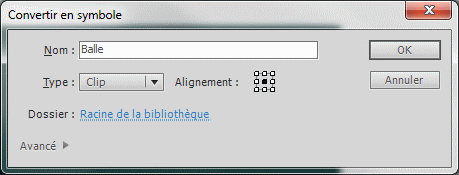
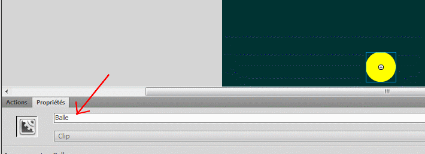

Nous allons, dans le cadre de ce tutoriel, découvrir comment appliquer quelques lois de la physique dans nos applications flash. Nous n'allons bien entendu pas voir comment retranscrire en ActionScript toutes les règles de notre univers, ce serait trop fatiguant (et surtout humainement impossible).
Commençons tout d'abord par dessiner une balle grâce à l'outil « Ovale » (raccourci touche O). Cette dernière aura une taille de cinquante pixels de largeur sur cinquante pixels de hauteur.
Nous allons à présent réaliser un clip. Pour cela, faites un clic droit sur le dessin obtenu, puis sélectionnez « Convertir en symbole ». Pour faire original, nous allons nommer le clip « Balle ».
Pour ce qui est de l'alignement, cochez le carré du milieu pour placer l'objet au centre du clip.

Création d'un clip pour notre balle.
Cela étant fait, nous nous retrouvons avec un MovieClip sur la scène, représentant notre balle. Il ne nous reste plus que la partie la plus importante : le code permettant à notre balle de subir la gravité.
Tout d'abord, nous allons donner un nom d'occurrence à notre balle pour pouvoir la manipuler depuis notre code. Cliquez sur le clip de la balle et positionnez-vous au niveau de l'onglet « Propriétés ». Dans le champ nommé <Nom de l’occurrence>, saisissez « Balle ».

Paramètres de l'objet Balle.
Cela étant fait, nous allons, par le biais du code, positionner notre balle au centre de la scène.
Pour taper votre code, rendez-vous dans le panneau « Actions ». Si ce dernier n'est pas ouvert, rendez-vous dans le menu « Fenêtre » puis cliquez sur « Actions » (ou pressez tout simplement la touche F9).
Nous manipulons notre objet grâce à l'occurrence que nous lui avons donnée (Balle).
Nous modifions ses propriétés x et y, qui représentent sa position sur la scène. La scène démarre à x=0 et y=0 (soit en haut à gauche).
Nous accédons aux informations de la scène grâce à la variable stage. Pour ce cas-là, nous lisons la propriété stageWidth de la scène qui signifie « largeur de la scène ».
Nous divisons la largeur par deux et l'attribuons à la coordonnée x de notre balle pour placer cette dernière au milieu de la largeur de la scène.
Nous faisons la même chose pour la hauteur (height).
Nous allons maintenant déclarer quelques variables qui nous sont indispensables pour gérer les forces.
var friction:Number = 0.98;
var gravite:Number = 0.5;
var vitesseX:Number = 0;
var vitesseY:Number = 0;
var accelerationX:Number = 0;
var accelerationY:Number = 0;
Détaillons à présent leur utilité.
Friction : la friction est le frottement de la balle dans l'air ; sa valeur par défaut est de 0.98 (elle peut osciller entre 0 et 1).
Gravité : c'est le coefficient de la gravité, la force qui s'exercera sur l'objet ; sa valeur par défaut est de 0.5. Plus la valeur est grande, plus la force qui attirera la balle vers le bas sera forte, et au contraire, plus elle est faible, moins cette dernière se fera sentir. Si elle est négative, la force sera exercée vers le haut.
Vitesse x : c'est la valeur de la vitesse sur l'axe des x (abscisses) de la balle. Elle est de 0 par défaut.
Vitesse y : c'est la valeur de la vitesse sur l'axe des y (ordonnées) de la balle. Elle vaut également 0 par défaut.
Accélération x : c'est l'accélération exercée sur la balle sur l'axe des x ; plus la balle tombe de haut, plus cette variable sera incrémentée, et plus elle tombera vite.
Accélération y : c'est l'accélération exercée sur la balle sur l'axe des y ; idem.
Nous allons maintenant placer un écouteur sur notre animation qui sera attentif à l'événement ENTER_FRAME. (Notre application étant une animation, un certain nombre d'images défilent par seconde ; c'est parfait pour ce que l'on veut faire car cette fonction sera appelée plusieurs fois par seconde).
À chaque fois que cet événement sera diffusé, la fonction moteurGravite sera appelée. :)
Notre fonction moteurGravite
function moteurGravite(e:Event){
}
Bon, d'accord, elle est actuellement vide et ne fait rien. Voyons voir ce que nous devons faire pour arriver à un résultat probant.
Nous allons commencer par l'attirance vers le bas (sur l'axe des y, donc). Pour cela, il nous faut incrémenter la variable vitesseY. On va commencer par lui imposer la gravité.
vitesseY += gravite;
Puis nous allons ajouter à cela l'accélération sur l'axe des y.
vitesseY += accelerationY;
Nous faisons pareil pour l'accélération sur l'axe des x (pour la vitesse x).
vitesseX += accelerationX;
À présent, il faut prendre en compte la friction (le frottement de la balle dans l'air, qui ralentit cette dernière), nous allons donc multiplier chacune des vitesses par la friction.
vitesseY *= friction;
vitesseX *= friction;
On applique maintenant ces vitesses sur notre balle de la manière suivante.
Minute, papillon ! Tu te fiches de moi ? La balle tombe dans le vide puis je ne la vois plus !
Hé, doucement ! :D Nous allons corriger ce problème en faisant en sorte que la balle ne puisse pas quitter la scène. Pour cela, nous devons modifier notre fonction moteurGravite et tester si la balle va sortir de notre champ de vision, et si c'est le cas, la faire rebondir.
Pour empêcher la balle de tomber, il faut tester si la position en y de la balle plus sa taille divisée par deux (divisée par deux parce que ses coordonnées sont placées au milieu de la balle, souvenez-vous, nous les avons définies à la création de la balle) est supérieure à la hauteur totale de la scène. Si c'est le cas, on replace la balle à la limite de la scène et on lui donne une petite impulsion pour la faire rebondir.
Nous avons réussi à faire comprendre à notre balle les lois de la pesanteur ! (Si c'est pas beau tout ça. :p ) Seul problème, c'est un peu trop statique à mon goût. C'est vrai quoi, on lance l'animation, on voit une balle tomber, rebondir, puis s'immobiliser… Pas très attrayant, vous ne trouvez pas ?
Nous allons donc ajouter une autre dimension à notre projet : pouvoir interagir avec la balle à l'aide du clavier (la faire bouger avec les touches directionnelles, si vous préférez).
Pour cela, rien de plus simple : nous allons écouter les événements en provenance du clavier, qui sont la pression et le relâchement d'une touche.
Nous devons maintenant déterminer quelles touches sont pressées ou relâchées parmi haut, gauche, bas et droite. Pour savoir quelle touche est concernée, je propose d'utiliser un switch.
switch(e.keyCode){
case Keyboard.UP:
break;
case Keyboard.DOWN:
break;
case Keyboard.LEFT:
break;
case Keyboard.RIGHT:
break;
}
Nous allons assigner un comportement à chacun de ces cas.
switch (e.keyCode)
{
case Keyboard.UP :
gravite = 0;
accelerationY = -0.5;
break;
case Keyboard.DOWN :
accelerationY = 0.5;
break;
case Keyboard.LEFT :
accelerationX = -0.5;
break;
case Keyboard.RIGHT :
accelerationX = 0.5;
break;
}
Je ne pense pas avoir besoin de beaucoup détailler, le code parle de lui-même.
La flèche du haut annule la gravité et pousse via une accélération notre balle vers le haut (axe y).
La flèche du bas crée une accélération vers le bas (axe y).
La flèche de gauche crée une accélération vers la gauche (axe x).
La flèche de droite crée une accélération vers… la droite ! Oui ! (Axe x aussi.)
Il faut maintenant prendre en compte le relâchement pour annuler les accélérations et éventuels changements de gravité.
Pour faire la différence entre l'action « appuyer » et l'action « relâcher », nous allons utiliser la variable e.type qui vaudra KeyboardEvent.KEY_DOWN si la touche est appuyée et KeyboardEvent.KEY_UP si la touche est relâchée.
La notation e.type == KeyboardEvent.KEY_DOWN retourne un boolean. Nous aurons donc un true si la touche est appuyée et un false sinon.
Voici alors le code de la fonction.
function gestionTouches(e:KeyboardEvent)
{
if (e.type == KeyboardEvent.KEY_DOWN)
{
switch (e.keyCode)
{
case Keyboard.UP :
gravite = 0;
accelerationY = -0.5;
break;
case Keyboard.DOWN :
accelerationY = 0.5;
break;
case Keyboard.LEFT :
accelerationX = -0.5;
break;
case Keyboard.RIGHT :
accelerationX = 0.5;
break;
}
}
else
{
gravite = 0.5;
accelerationY = 0;
accelerationX = 0;
}
}
Et voici le code complet.
//Positionnement de notre balle au centre de la scène
Balle.x = stage.stageWidth / 2;
Balle.y = stage.stageHeight / 2;
//Variables nécessaires à l'application de la gravité
var friction:Number = 0.98;
var gravite:Number = 0.5;
var vitesseX:Number = 0;
var vitesseY:Number = 0;
var accelerationX:Number = 0;
var accelerationY:Number = 0;
//Écoute de l'événement ENTER_FRAME
addEventListener(Event.ENTER_FRAME, moteurGravite);
//Écoute du clavier
stage.addEventListener(KeyboardEvent.KEY_DOWN, gestionTouches);
stage.addEventListener(KeyboardEvent.KEY_UP, gestionTouches);
function moteurGravite(e:Event)
{
vitesseY += gravite;
vitesseY += accelerationY;
vitesseX += accelerationX;
vitesseY *= friction;
vitesseX *= friction;
Balle.x += vitesseX;
Balle.y += vitesseY;
if (Balle.y + Balle.height / 2 > stage.stageHeight)
{
Balle.y = stage.stageHeight - Balle.height / 2;
vitesseY *= -1;
}
if (Balle.y - Balle.height / 2 < 0)
{
Balle.y = Balle.height / 2;
vitesseY *= -1;
}
if (Balle.x + Balle.width / 2 > stage.stageWidth)
{
Balle.x = stage.stageWidth - Balle.width / 2;
vitesseX *= -1;
}
if (Balle.x - Balle.width / 2 < 0)
{
Balle.x = Balle.width / 2;
vitesseX *= -1;
}
}
function gestionTouches(e:KeyboardEvent)
{
if (e.type == KeyboardEvent.KEY_DOWN)
{
switch (e.keyCode)
{
case Keyboard.UP :
gravite = 0;
accelerationY = -0.5;
break;
case Keyboard.DOWN :
accelerationY = 0.5;
break;
case Keyboard.LEFT :
accelerationX = -0.5;
break;
case Keyboard.RIGHT :
accelerationX = 0.5;
break;
}
}
else
{
gravite = 0.5;
accelerationY = 0;
accelerationX = 0;
}
}
Nous avons enfin terminé ! Je pense que vous comprenez qu'avec ça, de nouvelles possibilités s'offrent à vous pour vos projets flash. Si vous voulez télécharger le fichier .fla, le voici : télécharger le fichier .fla de l'application Balle.
Nous voici donc à la fin de ce tutoriel. Vous savez maintenant comment faire pour animer un objet dans flash, et exercer des forces sur ce dernier, telles que la gravité et les accélérations, par exemple.
Vous pouvez réutiliser ce concept pour mettre en œuvre d'autres principes de la physique sur d'autres applications flash ; les possibilités sont vraiment très nombreuses. Je pense notamment à la création de petits jeux flash : il peut être utile, par exemple, d'employer cette méthode pour animer des personnages, des objets qui tombent du ciel ou autres. :)